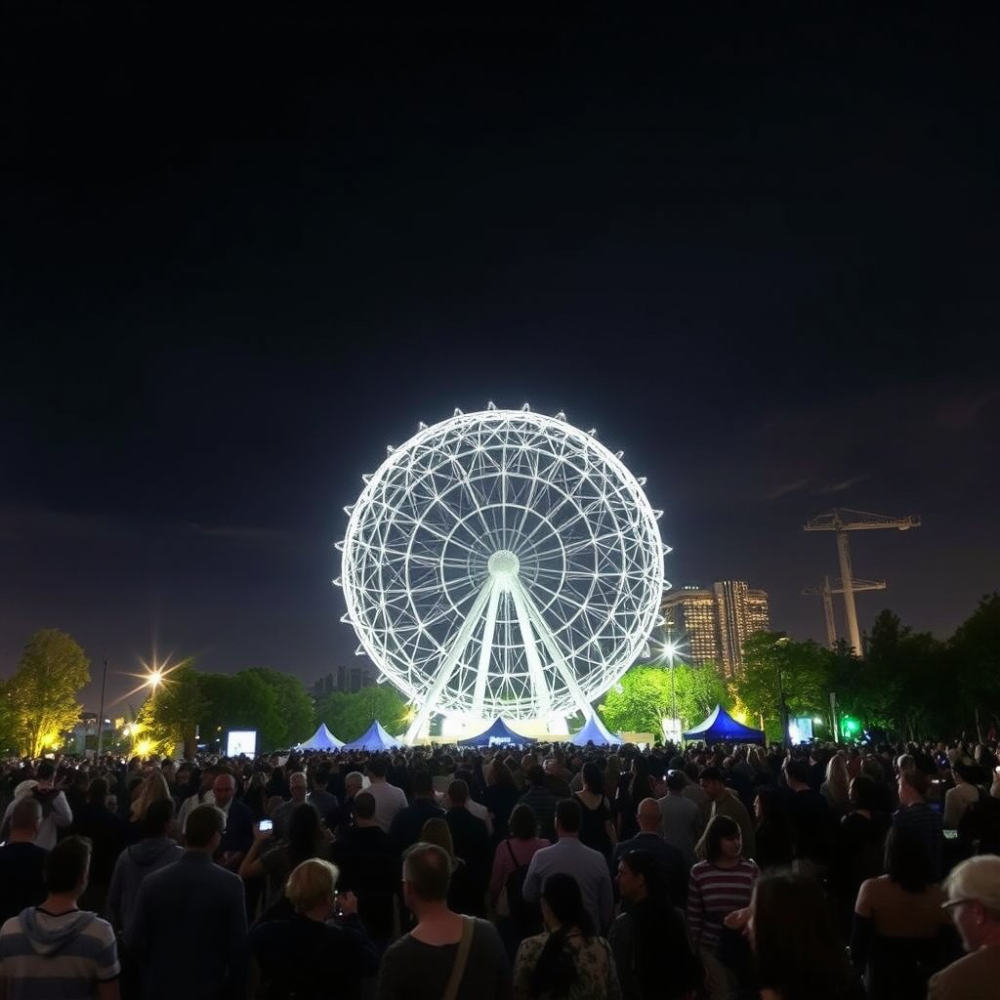
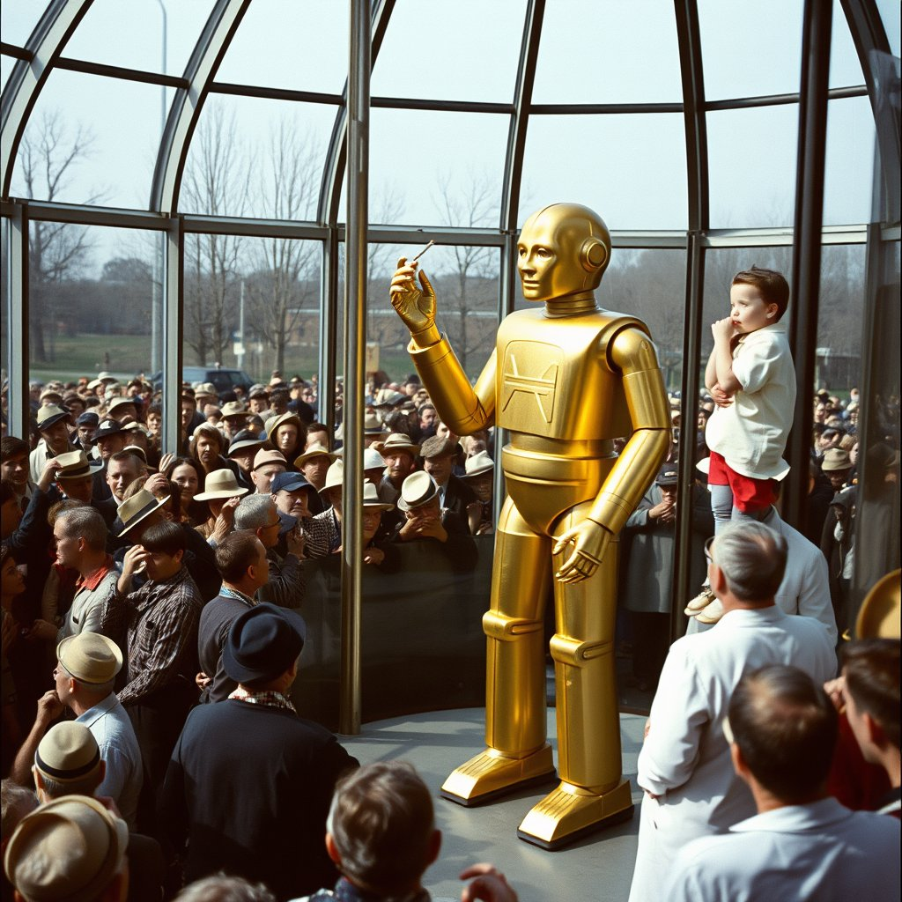
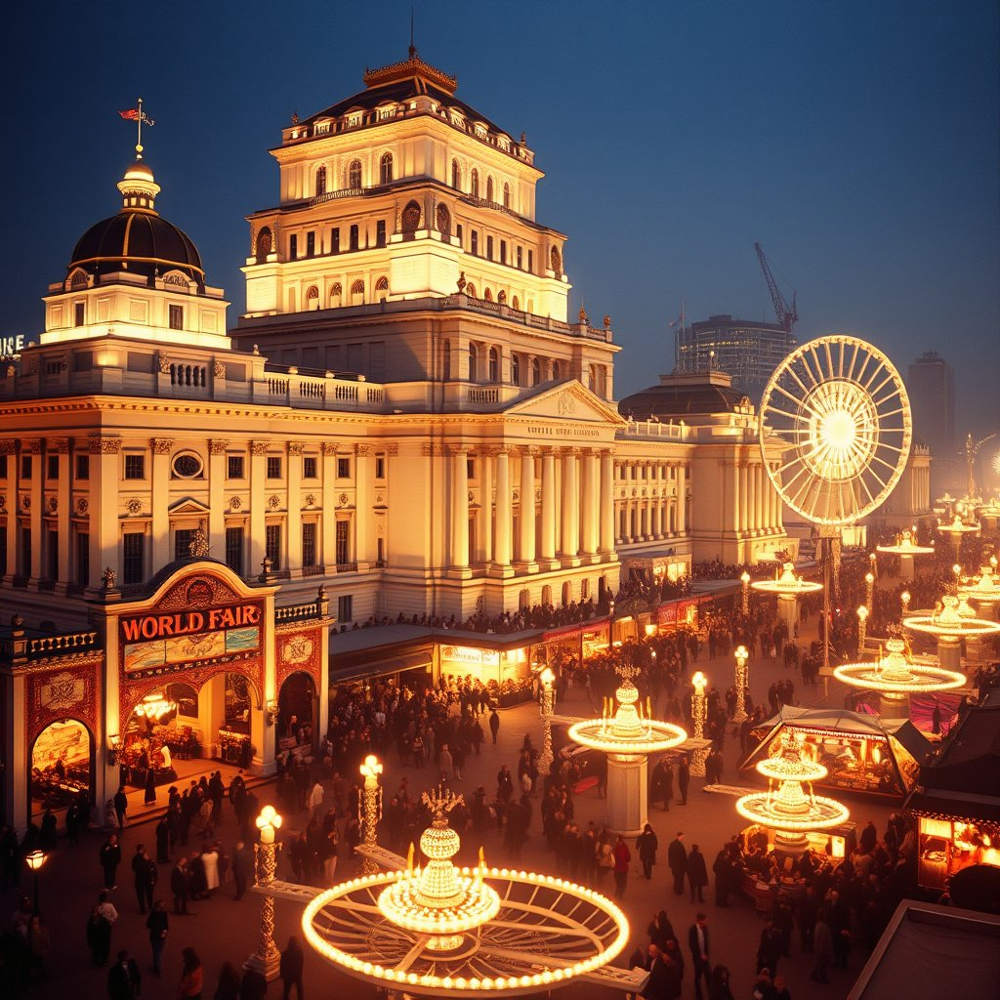
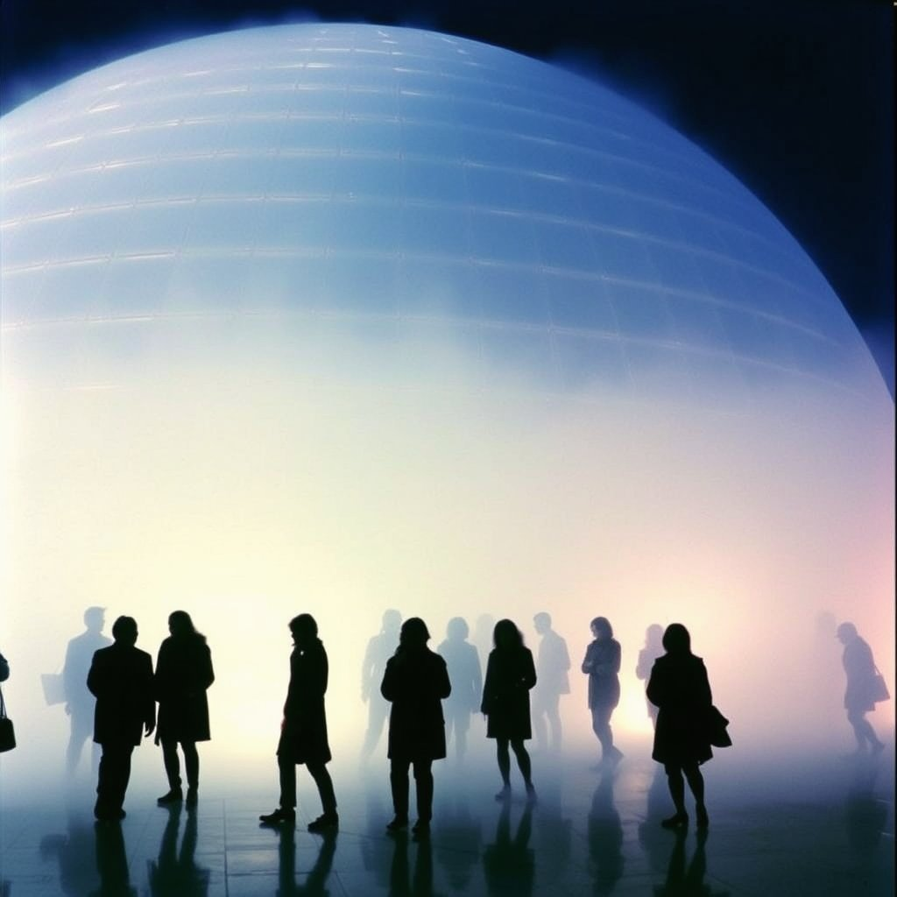
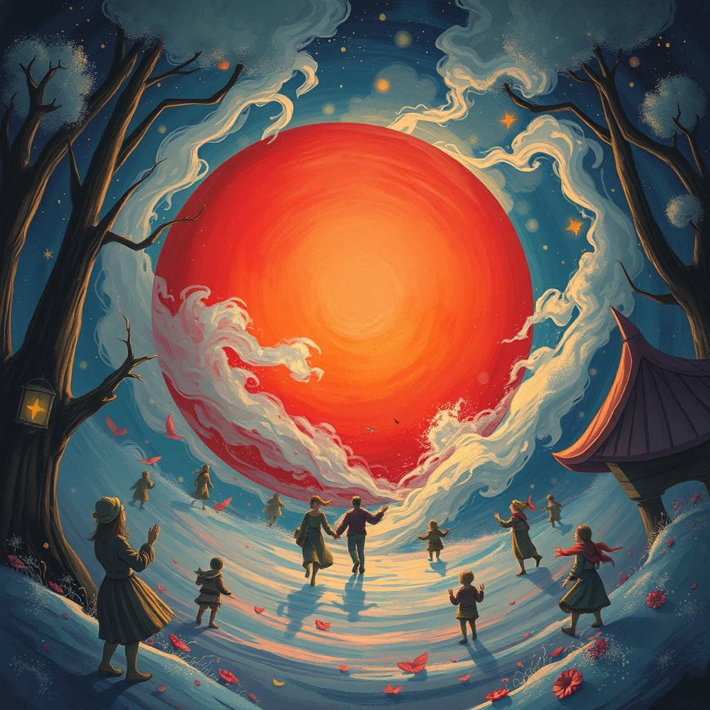

Run results · June 2026
All five fairs
Each card shows the seed image, an inline looping SkyReels video, the Llama poem, and the poem image. All generated on one QB2 machine.
1964 · New York
World's Fair — Unisphere
Flushing Meadows, Queens · "Peace Through Understanding"

FLUX.1-schnell · seed image
SkyReels V2 I2V
Poem — Llama 3.3 70B
The Unisphere gleams in silver light,
Tomorrow's promise etched in steel.
In this fleeting moment, wonder and disillusion entwine.
Tomorrow's promise etched in steel.
In this fleeting moment, wonder and disillusion entwine.

FLUX.1-schnell · poem image
1939 · New York
World's Fair — Elektro the Robot
Flushing Meadows, Queens · "The World of Tomorrow"

FLUX.1-schnell · seed image
SkyReels V2 I2V
Poem — Llama 3.3 70B
Behind glass, Elektro's metal form gleams bright,
A marvel of 1939's futuristic light,
As Depression-weary crowds press in to see,
The seven-foot robot count with mechanical glee.
A marvel of 1939's futuristic light,
As Depression-weary crowds press in to see,
The seven-foot robot count with mechanical glee.

FLUX.1-schnell · poem image
1893 · Chicago
World's Columbian Exposition — Tesla's Light
Jackson Park · "The White City"

FLUX.1-schnell · seed image
SkyReels V2 I2V
Poem — Llama 3.3 70B
In the Electricity Building's hallowed space,
Tesla's glass tube shines with eerie, blue-lit pace,
Their gasps and whispers weave a spell of awe and fright,
As the future, like a specter, takes its first, flickering light.
Tesla's glass tube shines with eerie, blue-lit pace,
Their gasps and whispers weave a spell of awe and fright,
As the future, like a specter, takes its first, flickering light.

FLUX.1-schnell · poem image
1970 · Osaka
Expo 70 — Nakaya's Fog Pavilion
Suita, Osaka Prefecture · "Progress and Harmony for Mankind"

FLUX.1-schnell · seed image
SkyReels V2 I2V · depth skipped (fog)
Poem — Llama 3.3 70B
At Expo 70's Pepsi Pavilion, Nakaya's mist
Envelops the crowd, a luminous, xenon-lit kiss,
A dream of tomorrow, born of fog and light, fades to grey,
Leaving us with wonder, at the future's unkept promise of the day.
Envelops the crowd, a luminous, xenon-lit kiss,
A dream of tomorrow, born of fog and light, fades to grey,
Leaving us with wonder, at the future's unkept promise of the day.

FLUX.1-schnell · poem image
1967 · Montreal
Expo 67 — Disney's Circle-Vision
Île Sainte-Hélène · "Man and His World"

FLUX.1-schnell · seed image
SkyReels V2 I2V
Poem — Llama 3.3 70B
In Expo 67's futuristic sphere,
Disney's Circle-Vision casts a dizzying spell,
Niagara's torrent cascades above, a watery shroud,
A last glimpse of Walt's promised tomorrow, now a relic of a bygone dream.
Disney's Circle-Vision casts a dizzying spell,
Niagara's torrent cascades above, a watery shroud,
A last glimpse of Walt's promised tomorrow, now a relic of a bygone dream.

FLUX.1-schnell · poem image
Total wall time: ~3 hrs · Pure inference: ~55 min · 30 artifacts · 5 playlists · QB2 (P300X2 Blackhole)